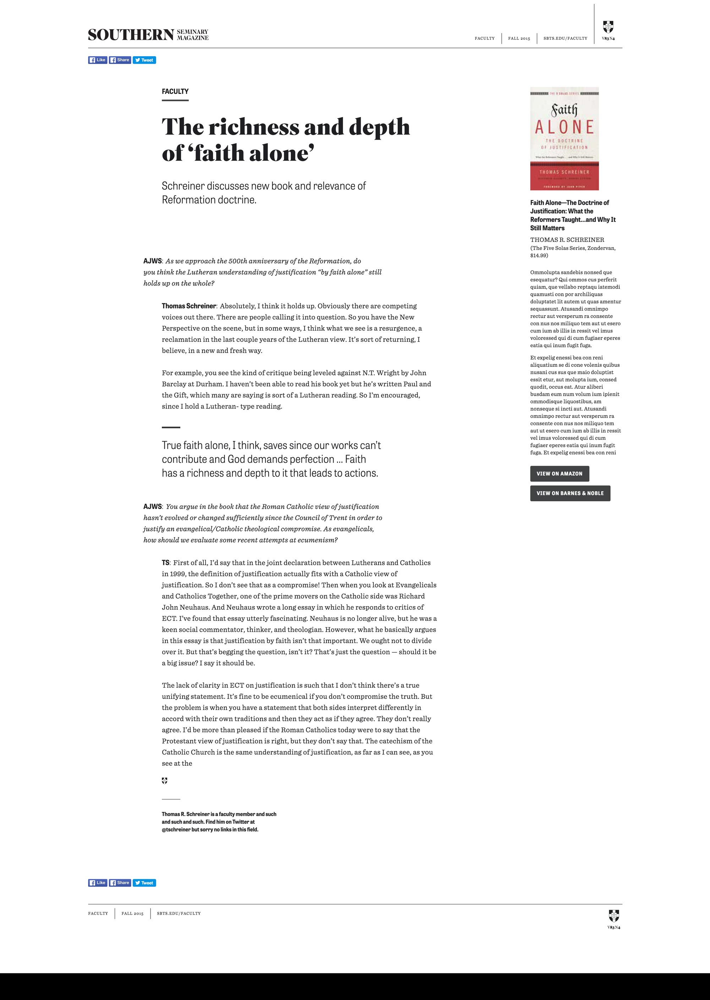
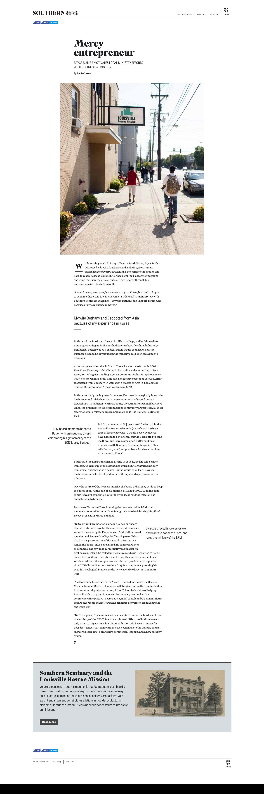
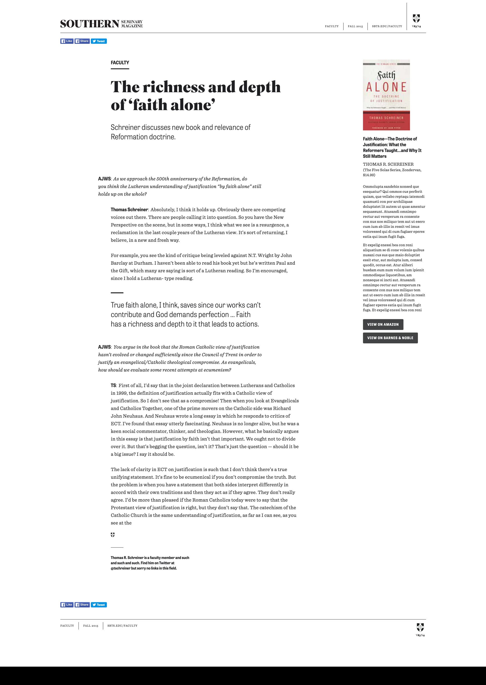
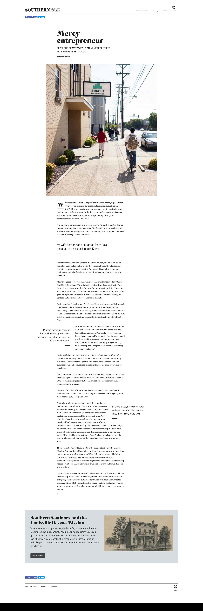

Southern Seminary has been a long-standing client and we’ve worked on a multitude of projects together. The latest project brought their newly designed institutional print magazine to the web.
First, a note: The following web templates were based directly on the design for the print version of the magazine. The design of the print magazine was led by Creative Director Eric Rivier and Lead Designer Daniel Carroll. The web templates shown here are the interpretation of the print forms for the web.
For this project the design was a solved problem. We all knew what it needed to look like — the magazine. The design of the web templates was the easiest part and took the least amount of time. The main challenge was to figure out the most optimal way to structure the information input and output for publishing the magazine online.
But before that process began the first step was to ensure that everyone was on the same page. There were two departments involved and I wanted to make sure that our vision for how the project was supposed to turn out was the same. To this end, I created a quick concept model for the project.
Concept models are a great way to articulate the minutiae of a system in easy to understand generalities. They abstract away the details of specialized domain knowledge that can distract from the overall picture, and surface the connection points and assumptions that are necessary to understand. The concept model for the magazine project is shown in Figure 1.
A print magazine is highly customizable — every layout can be designed to the individual word with ease. However, most of the time, for sake of reader familiarity and streamlining production common template patterns are set in place. The refreshed magazine had about eight of these themed sections and story formats. See Figure 2 for two sample magazine layouts.
When translating these story formats to the web, they were not going to be stuffed into a typical blog layout of title and content. They were diverse and detailed in their formatting and this required care and attention.
The chief job of the project lie in finding the most efficient method to build the system to accommodate the publishing of these different types of stories as well as any potential future content integrations.
The content management system (CMS) to be used was WordPress. WordPress has a very robust content entry area for the main text that would allow for complex styling via specialized markup. But I didn’t want to rely on editors having to remember to style certain portions of the content in certain ways, let alone having the ability to write HTML as a requirement. Take a “Q & A” article layout for example as compared to the basic story layout (see Figures 3 & 4). If this were a direct text “dump” in WordPress it would require the editor to enter a lot of markup and specialized classes. I can assure you that the end result is headaches for all.

 



What’s needed is a way to modularize the content, and with a plugin for WordPress called Advanced Custom Fields (ACF) we can do just that. The ACF plugin was built for cases like this. It facilitates complex repeatable content patterns that allow the editor to focus just on content entry. It’s easy to setup in the admin and even easier to integrate into the code.
However, if we stopped there and declared the problem solved we would quickly get into a spaghetti mess of code and template files as each scenario was built as an independent solution. Inefficencies would be prevalent in the system and little problems now would grow into big problems later. Smells like a redesign project in two years to me.
Christopher Alexander
Harvard University Press,
Cambridge, MA, & London, England
1964 · 216 pages
To discover the most efficient path for development and the most optimized process for content entry process I turned to a method of problem solving outlined by Christopher Alexander in his book “The Synthesis of Form.” This methodology revolves around listing the requirements of a project and then eliminating the points of conflict — or misfits — between the solution and the problem. Sounds straightforward!
Key to reducing the points of conflict is to be abelt to understand the problem without bias or assumptions, which means moving the solution from your mind to paper. This allows you to “work” the solution and see the problem for what it really is. There’s more, much more, but first let’s bring our narrative to this point.
The book is written using the conditions of architecture and urban planning (with multiple references to physical product design thrown in), and therefore I had to alter the meaning of a stress point, or misfit, to frame our problem. I defined a misfit as any point of information output. In other words, any point where the design met the data model. We had the requirements — in this case the design of the templates. Now we needed the misfits.
First, I listed and grouped all potential input & output connections. This looked like something as you would first think about it: all the items at the top were grouped into “header”, stuff at the bottom in “footer”, and so forth. Then the main content of the various article types were abstracted into content building blocks. As a whole it presented a rough draft conceptualization of the content independent of the design. This constituted the misfits and my initial mental picture of how to solve it.
Already well aware of the perils of relying on the first idea, I was ready to explore deeper to find the true solution. Alexander frames this in a more academic way as such:
“[The] … designer works entirely from the picture in his mind, and this picture is almost always wrong. The way to improve this is to make a further abstract picture of our first picture of the problem, which eradicates its bias and retains only its abstract structural features;” (Synthesis, 77-78)
And further:
“[F]or every problem there is one decomposition which is especially proper to it, and … this is usually different from the one in the designer’s head.” (Synthesis 83)
This decomposition Alexander calls the program and “is a reorganization of the way the designer thinks about the problem.” (Synthesis, 83) It’s the end result of the discovery of the actual problem. Or using the vocabulary of the book, it’s the discovery of the context (problem = context). Creating the program is the analytical phase — the full realization of the context, or problem.
What comes next is “the synthetic phase, in which a form is derived from the program.” (Synthesis, 84) Alexander calls this synthetic phase “the realization of the program.” The end result of the synthetic phase is a fully realized form wherein the form is the solution to the problem (form = solution).
The process of moving from context to form is illustrated with a very simple scheme on page 76 of the book which I’ve reproduced in Figure 5. Keep in mind that the mental picture here is referring to how you are framing the problem in your mind, not solely the ideas of what the designed outcomes will look like; though that is part of it. I’m pointing this out since the scenario here is a website, for which most designers form designs “out of their head” (notwithstanding of course all the references in the world that came before). All to say this a complex concept that requires further nuance and study than I am representing here.
So what does all this mean? Well, let’s pick back up with the notebook sketches.
The first notebook sketches I had done were my initial mental picture of the problem. I then set about to create a formal picture of my mental picture. This involved a lot of sketching, notating sketches, jotting notations, and more.
Patterns began to emerge as I looked at different ways to structure the information. These patterns were repeatable. And patterns of patterns began to emerge. When it was finished, and believe me I’m glossing over many a throwaway sketch page, instead of a flat abstraction map of pieces of information, I now had a hierarchy tree that mapped out the information problem in an easy to understand system. This was my program (see Figure 6)
Figure 6 The program, or result of the analysis phase, for the magazine web project. Note that it has been simplified a bit for clarity.
One of my favorite lessons from the book: “Every component has this twofold nature: it is first a unit, and second a pattern, both a pattern and a unit. Its nature as a unit makes it an entity distinct from its surroundings. Its nature as a pattern specifies the arrangement of its own component units. It is the culmination of the designer’s task to make every diagram both a pattern and a unit. As a unit it will fit into the hierarchy of larger components that fall above it; as a pattern it will specify the hierarchy of smaller components which it itself is made of.” (Synthesis, 131)
Not only did this make the problem much easier to understand (easier to understand because it was broken into smaller and smaller units which allows you to understand "bite-sized" chunks at a time as opposed to having to understand either the whole of it or nothing at all) it makes it an uncomplicated process to add new content types if the need ever arises. The parallel structures have already been placed into the system, it’s just a matter of addition.
What’s important to note with this project is that the “realization of the program” was not the static designs that are shown throughout this case study but how the backend data structures and template files were created and organized. The final form is invisible to the end user that visits the website to read an article — not how it looks but how it was created and delivered.